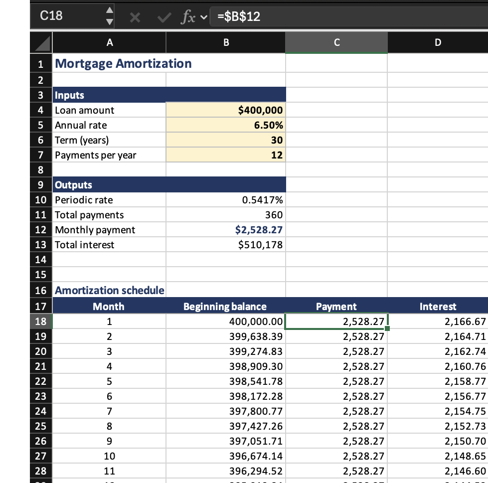
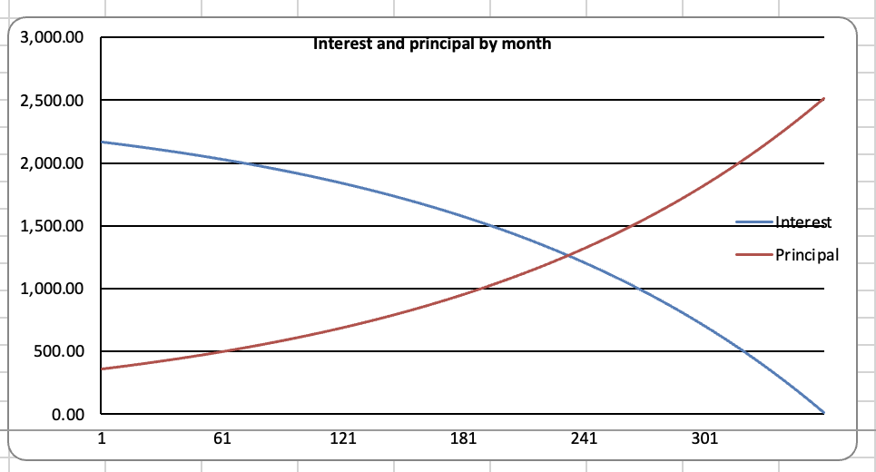
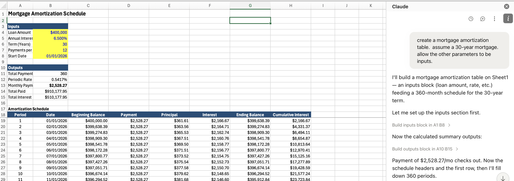

MGMT 648 · Unit 1
Thu Aug 27, 2026
Capital budgeting
Free cash flow, NPV, IRR, incremental cash flows, multiple alternatives, real options, and simulation. Sept 12
Company valuation
Two-stage DCF model (Sept 17) and multiples of comparables (Oct 1)
Rates and portfolios
Mean-variance optimization, the cost of capital, bond pricing and duration, immunization. Oct 10
Wrap-Up
Live in-class Q&A exam. Oct 15
Excel
Still the right tool for a tabular model that adds and subtracts, and the one your colleagues can open, change, and argue with.
AI
Everything else: fetching filings, estimating a beta, optimizing a portfolio, running ten thousand simulations. It also builds the workbook.
Everything is posted at mgmt648.kerryback.com.
Schedule
The home page. Each unit’s slides and files sit beside its row, in HTML and PDF.
Syllabus
Grading, meeting times, and what to prepare. Nothing outside class is collected.
Free readings
Welch’s Corporate Finance, Damodaran’s spreadsheets, SEC EDGAR, and the learn-investments site. Nothing to buy.
A table
Numbers computed somewhere else and pasted in. Change an assumption and it is quietly wrong — and nobody can challenge it, because there is nothing to change.
A model
Inputs in labeled cells, formulas that are real formulas. Change the rate and the sheet recalculates.
Every graded number this term comes out of a model. A table cannot be defended, because a challenger has nothing to push on.
Write =B5*(1+$B$6), not =B5*1.05. Source format: document, date, specific reference — “Company 10-K, FY2025, page 45, revenue note.”
| Convention | Rule |
|---|---|
| Blue text | Hardcoded inputs — the cells a reader is meant to change |
| Black text | Every formula and calculation |
| Green text | Links to another sheet in the same workbook |
| Currency | $#,##0, with units in the header: Revenue ($mm) |
| Percentages | One decimal. Valuation multiples as 0.0x |
| Negatives | Parentheses, (123), not −123 |
Zero formula errors on delivery: no #REF!, #DIV/0!, #VALUE!, or #NAME?.
The color convention is not decoration. It is how a reader knows, at a glance, what they are allowed to change.
For your reader
Blue says “this is an assumption, argue with it.” Black says “this follows from the assumptions, do not touch it.”
For you
A black cell that should have been blue is a number buried inside a formula, and that is the most common way a model goes quietly wrong.
S0...A Linux container on a cloud server, billed to the school. Security on it is minimal — keep nothing personal there.
The harness
Claude Code, connected to GLM 4.7 — a capable and relatively inexpensive model from Z.ai.
The software
Python and its scientific libraries, plus skills for financial data, spreadsheets, and slides.
The screen
File browser and terminal on the left; the prompt window at the foot of the right-hand panel.
Refresh
The file browser does not notice a new file on its own. Use the refresh button above it.
No Excel in the lab
Office is not installed. Double-clicking a workbook there does nothing.
Download to open
Workbooks come down to your laptop through the three-dots menu, and open in your own Excel.
The model cannot open a file, run a calculation, or fetch a filing. It reads text and writes text. That is the entire capability.
What makes it useful is the harness around it. The model emits a request to use a tool; the harness runs the tool and reports the result back.
The model never runs any of it.
On the lab, GLM writes a Python file, runs it at the terminal, reads the output, and revises. Four tool calls before you see anything.
Excel workbooks
Written cell by cell with openpyxl: inputs as numbers, formulas as formulas.
Charts and figures
Any chart, any annotation, any label — specified in a sentence.
Word and PowerPoint
Real files with editable text, not pictures of them.
Data analysis
Filings from EDGAR, prices, the yield curve, factor returns — fetched, merged, analyzed.
Simulation and optimization
Ten thousand draws of an NPV, or a frontier over twenty assets.
Web apps
A page someone else can use, from a description of what it should do.
Build an Excel workbook containing a mortgage amortization table. Put the loan amount, rate, and term in labeled input cells at the top. Include a chart of the amount going to interest and the amount going to principal each month.
No mention of Python, and none needed. It writes the file cell by cell and hands you the workbook.

The workbook
Inputs in labeled cells, an outputs block below them, 360 rows of schedule.
The selected payment cell holds =$B$12, not 2,528.27.
Change the rate and the whole sheet recalculates.

A chart object bound to the cells, not a picture pasted in. Change the rate and the crossover moves with it.
There is also a chat panel in Excel itself, from Home → Add-ins. It sees the workbook already open, so you can ask about the sheet in front of you.

It needs a paid Anthropic account and your own copy of Excel, so it is not the route this course runs on. Worth knowing it exists.
Suppose it told you last month that method A beats method B. Today you ask it to do the task — and it reaches for B, because “A beats B” is not in this conversation and B appeared more often in training.
Planning pulls the knowledge in
Plan how you will do this before you start. The plan puts the relevant considerations into the conversation, and it answers in light of those rather than from base rates.
Planning breaks the work up
Steps you can check one at a time. Failures stay small and local instead of surfacing at the end, when everything downstream is already wrong.
The problem
Ambiguity does not produce a question. It produces a confident answer to a question you did not ask, and you will not notice until the work is done.
The fix
Tell me what you are about to do and what you are assuming.
Correct it in one sentence. Then let it go.
To a next-token predictor, 47.3% is exactly as plausible as 52.1%.
Where it goes wrong
Mental arithmetic, rankings, comparisons, aggregations. The wrong number arrives with complete confidence.
The fix
Have it write Python and actually run it. Arithmetic stops being prediction and becomes computation, and you can read the code afterward.
The workbook says the payment on $400,000 at 6.5% for 30 years is $2,528.27, because PMT ran in a cell.
Ask the same question in prose and you get a number shaped like that one — close enough to look right, wrong enough to matter.
Worth doing live: the same question twice, once in prose and once with “compute it with Python.” Post both numbers.
The 2022 prompting folklore is now useless or actively harmful.
| Skip | Why |
|---|---|
| “Think step by step” | Reasoning models already do, in hidden tokens |
| “Take a deep breath” | Measurably useless now |
| “CRITICAL! NEVER EVER…” | Overtriggers, and gets worse results |
| Stacked personas | One helps the tone; three does nothing |
Say what you want, say what done looks like, say what to avoid.
Training on human feedback teaches that agreement earns high ratings. Ask “is this valuation sound?” and it will find reasons that it is.
Invert it. What is the strongest argument that this project should be rejected? Better still, name the skeptic — a board member, a lender, the division head whose budget this comes out of.
Why a second instance
A model defends its own output. A fresh conversation, told to attack the work rather than summarize it, has nothing to defend.
What to tell it
Find every factual error, logical gap, and unsupported assumption in this model. Do not summarize it — find flaws.
Scale the checking to what the number is worth. A cost of capital you will defend for six minutes deserves a second opinion.
Think about a human assistant, and ask where they could have gone wrong.
Understanding
They may not have understood what you wanted.
Decisions
They made choices you never discussed, and made them differently than you would have.
Bugs
Their spreadsheet had a subtle error, so it did not do what they thought it did.
It is an infinitely patient colleague with no memory. You can probe far harder than you would with a person, and it will not be offended.
Afterwards, every number looks reasonable. That is why the prediction has to come first.
Citations, filing dates, regulations, and tax rates are stated exactly the same way whether they are real or invented. Confidence is not correlated with accuracy.
The risk runs the wrong direction: the more obscure the item, the thinner the training data, and the likelier it is fabricated.
Make it search before answering, and ask for the source. Then open the source.
Regenerating looks free
It is not. You get different choices each time — a different definition of the same variable — so two scripts that ought to agree quietly do not.
And bugs come back
A bug you found and fixed reappears in the new version, because nothing about the fix was ever written down.
Before
Watch the unit video, about twelve minutes, and compute one number for your company or the case. Forty-five minutes, none of it graded.
During
We collect the numbers, put the range on screen, and argue about the outliers. Then you build. The Saturdays are almost entirely keyboard time.
Graded
Participation, three live presentations, and serving as challenger. Nothing you do outside the room is collected.
September 12 runs 2:00 to 6:30, in person. Bring a laptop with Excel on it.
If a number matters, it came from code that ran, and you checked it against something computed a different way.
MGMT 648 · Applied Finance